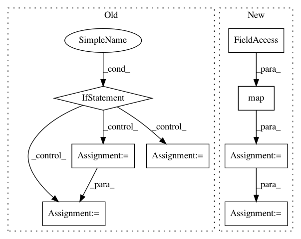

608fff2119f21191352ddf5d96eb82fc1ab099b0,dit/utils/misc.py,,partitions,#,370
Before Change
// Thomas Dybdahl Ahle (https://github.com/thomasahle)
// Source: http://compprog.wordpress.com/2007/10/15/generating-the-partitions-of-a-set
if not set_:
yield ()
return
for i in xrange(2**len(set_) / 2):
parts = [set(), set()]
for item in set_:
parts[i&1].add(item)
i >>= 1
for b in partitions(parts[1]):
yield (parts[0],) + b
def partitions(set_):
Generates partitions of elements in `set_".
After Change
if tuples:
for partition in partitions1( seq ):
// Convert the partition into a list of sorted tuples.
partition = map(tuple, map(sorted, partition))
// Convert the partition into a sorted tuple of sorted tuples.
// Sort by smallest parts first, then lexicographically.
partition = tuple(sorted(partition, cmp=len_cmp))
yield partition
else:
In pattern: SUPERPATTERN
Frequency: 3
Non-data size: 8
Instances
Project Name: dit/dit
Commit Name: 608fff2119f21191352ddf5d96eb82fc1ab099b0
Time: 2013-02-25
Author: chebee7i@gmail.com
File Name: dit/utils/misc.py
Class Name:
Method Name: partitions
Project Name: soft-matter/trackpy
Commit Name: cc410f68b6c1d1417322ec02e22ea7713ca0bc48
Time: 2020-03-18
Author: ruben@lighthacking.nl
File Name: trackpy/locate_functions/brightfield_ring.py
Class Name:
Method Name: locate_brightfield_ring
Project Name: EpistasisLab/scikit-rebate
Commit Name: 971719830d589eba66434ddabfc62c1a689be677
Time: 2017-04-07
Author: weixuanf@upenn.edu
File Name: skrebate/relieff.py
Class Name: ReliefF
Method Name: _run_algorithm